Weekly Statistics and Plots
 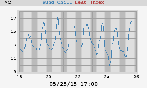
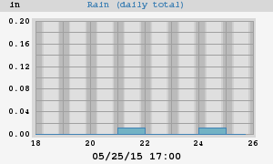
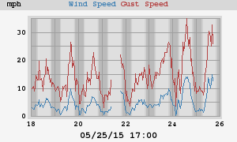
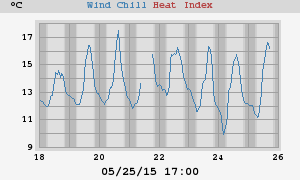
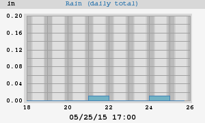
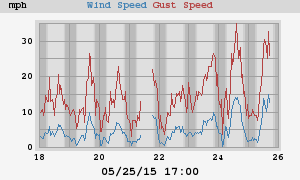
 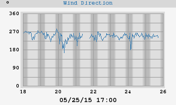
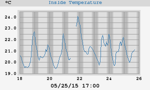
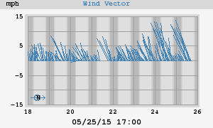
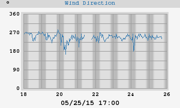
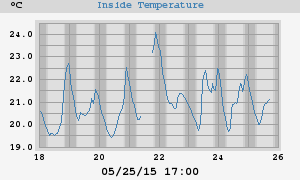
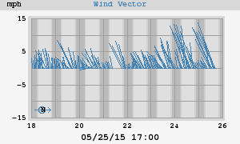
|
High Temperature Low Temperature |
18.0°C at 14:47 on Monday 9.5°C at 03:26 on Sunday |
| High Heat Index | 18.0°C at 14:47 on Monday |
| Low Wind Chill | 9.5°C at 03:26 on Sunday |
|
High Humidity Low Humidity |
99% 01:55 on Sunday 65% 13:55 on Monday |
|
High Dewpoint Low Dewpoint |
12.9°C 11:45 on Sunday 9.4°C 03:26 on Sunday |
|
High Barometer Low Barometer |
29.834 inHg at 00:08 on Sunday 29.671 inHg at 05:38 on Sunday |
| Rain Total | 0.01 in |
| High Rain Rate | 0.71 in/hr at 05:39 on Sunday |
| High Wind Speed | 35 mph from 225° at 13:22 on Sunday |
| Average Wind | 7 mph |
| RMS Wind | 8 mph |
|
Vector Average Speed Vector Average Direction |
7 mph 251° |
|
High Inside Temperature Low Inside Temperature |
22.3°C at 21:08 on Sunday 19.6°C at 08:16 on Sunday |
|
High Temperature Low Temperature |
27.3°C at 01-May-2015 11:31 8.1°C at 12-May-2015 09:51 |
| High Heat Index | 27.3°C at 01-May-2015 11:31 |
| Low Wind Chill | 7.2°C at 07-May-2015 02:57 |
|
High Humidity Low Humidity |
99% 03-May-2015 00:34 18% 17-May-2015 01:51 |
|
High Dewpoint Low Dewpoint |
14.1°C 22-May-2015 08:16 -3.1°C 17-May-2015 01:51 |
|
High Barometer Low Barometer |
29.914 inHg at 15-May-2015 06:11 29.522 inHg at 07-May-2015 16:58 |
| Rain Total | 0.02 in |
| High Rain Rate | 0.71 in/hr at 21-May-2015 01:10 |
| High Wind Speed | 35 mph from 270° at 12-May-2015 14:15 |
| Average Wind | 6 mph |
| RMS Wind | 7 mph |
|
Vector Average Speed Vector Average Direction |
5 mph 252° |
|
High Inside Temperature Low Inside Temperature |
25.0°C at 01-May-2015 00:00 -40.0°C at 02-May-2015 14:09 |
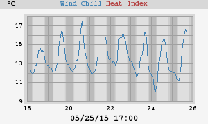
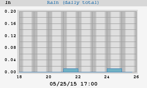
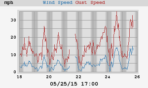
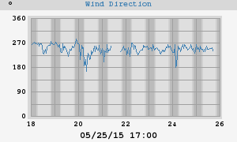
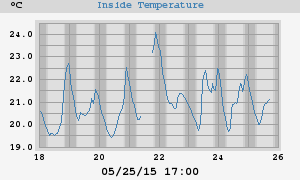
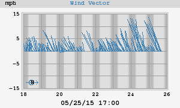